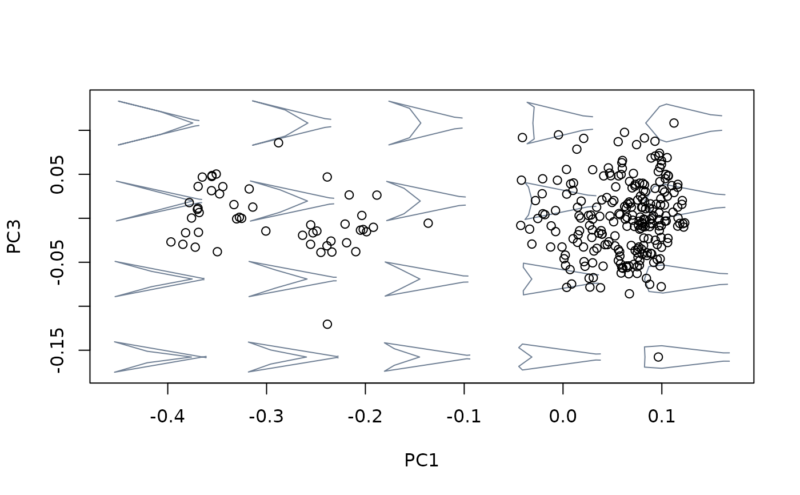
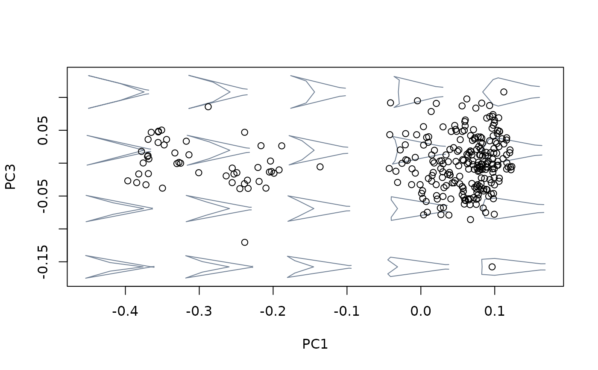
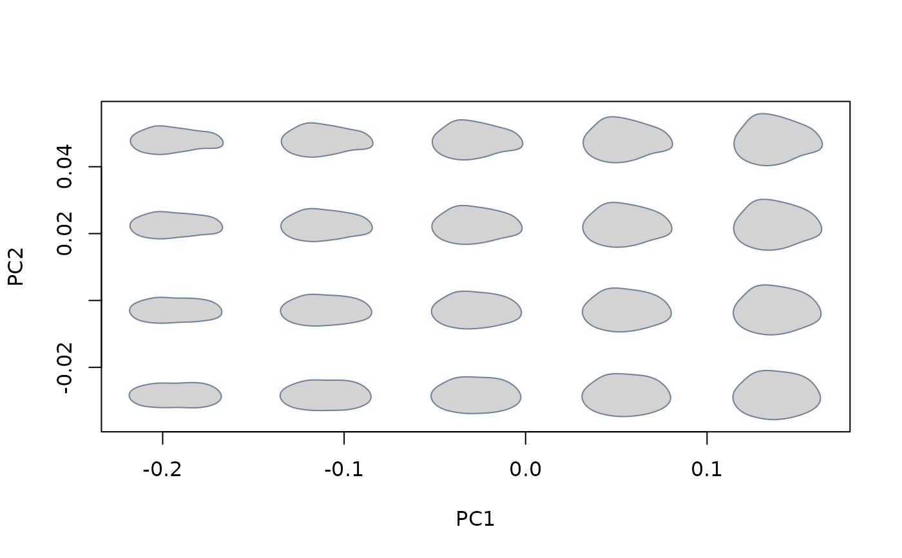
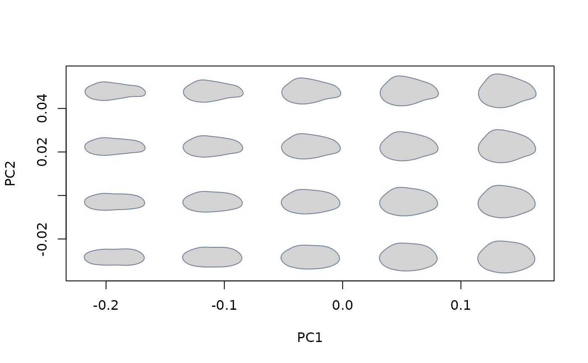

Create an empirical morphospace as an ordination comprising a set of axes synthesizing shape variation. Allows a variety of multivariate methods for building the ordination.
mspace(
shapes,
axes = c(1, 2),
links = NULL,
template = NULL,
p = NULL,
k = NULL,
FUN = stats::prcomp,
nh = 5,
nv = 4,
mag = 1,
invax = NULL,
asp = NA,
xlim = NULL,
ylim = NULL,
xlab = NULL,
ylab = NULL,
adj_frame = c(1, 1),
rot.models = 0,
size.models = 1,
asp.models = 1,
col.models = "#708095",
bg.models = NULL,
lwd.models = 1,
alpha.models = 1,
points = FALSE,
cex.ldm = 1,
col.ldm = "black",
plot = TRUE,
models = TRUE,
...
)Arguments
- shapes
Shapes data.
- axes
Numeric of length 2, indicating the axes to be plotted.
- links
A list with the indices of the coordinates defining the wireframe (following the format used in
Morpho).- template
Either a 2-column matrix containing landmarks/semilandmarks followed by coordinates defining a curve or set of curves describing additional aspects of morphology (for 2D shape data) or a
"mesh3d"object containing geometry of the structure the landmarks were placed on (for 3D shape data), corresponding to the mean shape of the sample. These will be warped using TPS interpolation to produce the set of background shell models (seebuild_template2d).- p
Numeric, indicating the number of landmarks/semilandmarks used (for landmark data only).
- k
Numeric, indicating the number of cartesian dimensions of landmarks/semilandmarks (for landmark data only).
- FUN
The function to be used for synthesizing geometric morphometric variation. Usual alternatives include
prcomp,bg_prcompandphy_prcomp.- nh
Numeric; number of shape models along the x axis.
- nv
Numeric; number of shape models along the y axis.
- mag
Numeric; magnifying factor for shape models.
- invax
Optional numeric indicating which of the axes provided in
axesneeds to be inverted (optionsare1,2orc(1,2)).- xlim, ylim, xlab, ylab, asp
Standard arguments passed to the generic plot function.
- adj_frame
Numeric of length 2, providing a posteriori scaling factors for the width and height of the frame, respectively.
- rot.models
Numeric; angle (in degrees) to rotate shape models.
- size.models
Numeric; size factor for shape models.
- asp.models
Numeric; the y/x aspect ratio of shape models.
- col.models
Color for wireframes/outlines.
- bg.models
Background color for outlines/meshes.
- lwd.models
Numeric; width of the lines in wireframes/outlines.
- alpha.models
Numeric; transparency factor for background models (3D only).
- points
Logical; whether to plot the scatter points.
- cex.ldm
Numeric; size of landmarks/semilandmarks in the background models.
- col.ldm
Color of landmarks/semilandmarks in the background models.
- plot
Logical; whether to plot morphospace.
- models
Logical; whether to plot background shape models.
- ...
Further arguments passed to
FUN.
Value
An object of class "mspace", which is a list containing:
$ordtype: method used for multivariate ordination.
$datype: type of shape data used.
$x: scores of the sample of shapes in the synthetic axes.
$rotation: eigenvector's coefficients.
$center: the mean values of the original shape variables.
$plotinfo: a list with the information used to create the plot.
Details
This function is the central piece of the morphospace workflow.
It produces a synthetic space from a sample of normalized shapes using
eigenanalysis-based ordination methods (PCA, between groups PCA, two-block
PLS, and their phylogenetic versions) and generates shape models depicting
the range of realized variation, retaining the information necessary to
project and retrieve new compatible shapes. The output of mspace is
meant to be expanded using the proj_* family of functions and the
%>% operator from magrittr.
See also
Examples
##2D Landmark data
#load and extract relevant data and information
data("tails")
shapes <- tails$shapes
species <- tails$data$species
links <- tails$links
tree <- tails$tree
#generate morphospace using the basic sample of shapes, PCA as ordination method
#and the links between landmarks provided for backround models
mspace(shapes, links = links, mag = 0.7, axes = c(1,2), points = TRUE)
 #increase magnification factor x2:
mspace(shapes, links = links, mag = 1.5, axes = c(1,2), points = TRUE)
#increase magnification factor x2:
mspace(shapes, links = links, mag = 1.5, axes = c(1,2), points = TRUE)
 #plot PCs 1 and 3
mspace(shapes, links = links, mag = 1.5, axes = c(1,3), points = TRUE)

#generate morphospace using the basic sample of shapes, bgPCA as ordination method
#and links between landmarks for backround models
mspace(shapes, links = links, FUN = bg_prcomp, groups = species, mag = 0.7,
axes = c(1,2), invax = 1, points = TRUE)
#plot PCs 1 and 3
mspace(shapes, links = links, mag = 1.5, axes = c(1,3), points = TRUE)

#generate morphospace using the basic sample of shapes, bgPCA as ordination method
#and links between landmarks for backround models
mspace(shapes, links = links, FUN = bg_prcomp, groups = species, mag = 0.7,
axes = c(1,2), invax = 1, points = TRUE)
 #generate morphospace using species' consensus shapes and phylogenetic tree,
#phylogenetic PCA as ordination method, and links between landmarks for backround
#models
sp_shapes <- expected_shapes(shapes, species)
mspace(sp_shapes, links = links, FUN = phy_prcomp, tree = tree, mag = 0.7,
axes = c(1,2), points = TRUE)
#just create a morphospace without plotting, save into an object, and inspect
morphosp <- mspace(shapes, links = links, mag = 0.7, axes = c(1,2), plot = FALSE)
names(morphosp)
#> [1] "x" "rotation" "center" "datype" "ordtype" "plotinfo"
#load wing data for a quick demo with templates
data("wings")
shapes <- wings$shapes
links <- wings$links
template <- wings$template
#generate morphospace using links
mspace(shapes, links = links, mag = 3, axes = c(1,2), points = TRUE)
#> Error in shapes_mat(shapes): object 'data2d' not found
#generate morphospace using template
mspace(shapes, template = template, mag = 3, axes = c(1,2), points = TRUE)
#> Error in shapes_mat(shapes): object 'data2d' not found
##3D Landmark data
if (FALSE) {
#load data and packages and extract relevant data and information
library(Morpho)
data("shells3D")
shapes <- shells3D$shapes
mesh_meanspec <- shells3D$mesh_meanspec
#generate morphospace. This is interactive, you need to rotate the shape by yourself and
#then press enter into the console.
mspace(shapes, mag = 1, axes = c(1,2), col.ldm = "black", cex.ldm = 2, points = TRUE)
#generate morphospace using a mesh template that improves visualization:
#first, get shape corresponding to shells3D$mesh_meanspec using geomorph::findMeanSpec
meanspec_id<- findMeanSpec(shapes)
meanspec_shape <- shapes[,,meanspec_id]
#then get the consensus shape and warp the sample mesh to get the mesh corresponding to the
#consensus using Morpho::tps3d
meanshape <- expected_shapes(shapes)
meanmesh <- tps3d(x = mesh_meanspec , refmat = meanspec_shape, tarmat = meanshape)
#finally, generate morphospace providing template (this function used the mesh warped to
#the mean shape of the entire sample, hence the previous lines)
mspace(shapes, mag = 1, axes = c(1,2), template = meanmesh, bg.models = "gray",
nh = 4, nv = 4, cex.ldm = 0, points = TRUE)
}
##Outline data
#load and extract relevant data and information
data("shells")
shapes <- shells$shapes$coe
#generate morphospace using all the raw variation
mspace(shapes, mag = 1, axes = c(1,2), nh = 5, nv = 4, size.models = 1,
asp.models = 1, bg.model = "light gray")

#generate morphospace using species' consensus shapes and phylogenetic tree,
#phylogenetic PCA as ordination method, and links between landmarks for backround
#models
sp_shapes <- expected_shapes(shapes, species)
mspace(sp_shapes, links = links, FUN = phy_prcomp, tree = tree, mag = 0.7,
axes = c(1,2), points = TRUE)
#just create a morphospace without plotting, save into an object, and inspect
morphosp <- mspace(shapes, links = links, mag = 0.7, axes = c(1,2), plot = FALSE)
names(morphosp)
#> [1] "x" "rotation" "center" "datype" "ordtype" "plotinfo"
#load wing data for a quick demo with templates
data("wings")
shapes <- wings$shapes
links <- wings$links
template <- wings$template
#generate morphospace using links
mspace(shapes, links = links, mag = 3, axes = c(1,2), points = TRUE)
#> Error in shapes_mat(shapes): object 'data2d' not found
#generate morphospace using template
mspace(shapes, template = template, mag = 3, axes = c(1,2), points = TRUE)
#> Error in shapes_mat(shapes): object 'data2d' not found
##3D Landmark data
if (FALSE) {
#load data and packages and extract relevant data and information
library(Morpho)
data("shells3D")
shapes <- shells3D$shapes
mesh_meanspec <- shells3D$mesh_meanspec
#generate morphospace. This is interactive, you need to rotate the shape by yourself and
#then press enter into the console.
mspace(shapes, mag = 1, axes = c(1,2), col.ldm = "black", cex.ldm = 2, points = TRUE)
#generate morphospace using a mesh template that improves visualization:
#first, get shape corresponding to shells3D$mesh_meanspec using geomorph::findMeanSpec
meanspec_id<- findMeanSpec(shapes)
meanspec_shape <- shapes[,,meanspec_id]
#then get the consensus shape and warp the sample mesh to get the mesh corresponding to the
#consensus using Morpho::tps3d
meanshape <- expected_shapes(shapes)
meanmesh <- tps3d(x = mesh_meanspec , refmat = meanspec_shape, tarmat = meanshape)
#finally, generate morphospace providing template (this function used the mesh warped to
#the mean shape of the entire sample, hence the previous lines)
mspace(shapes, mag = 1, axes = c(1,2), template = meanmesh, bg.models = "gray",
nh = 4, nv = 4, cex.ldm = 0, points = TRUE)
}
##Outline data
#load and extract relevant data and information
data("shells")
shapes <- shells$shapes$coe
#generate morphospace using all the raw variation
mspace(shapes, mag = 1, axes = c(1,2), nh = 5, nv = 4, size.models = 1,
asp.models = 1, bg.model = "light gray")
